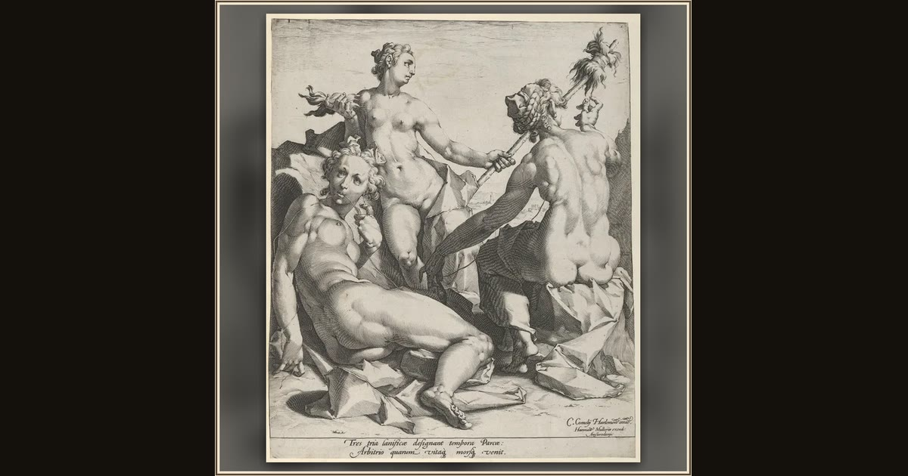

The Three Fates: Clotho, Lachesis and Atropos
Jan Muller · ca. 1589 · met
Clotho, Lachesis and Atropos with distaff and thread, the daughters of Necessity who in Er’s vision sing past, present and future and turn the spindle (617c). Explore its place in Plato's Republic, Book X, section 111.